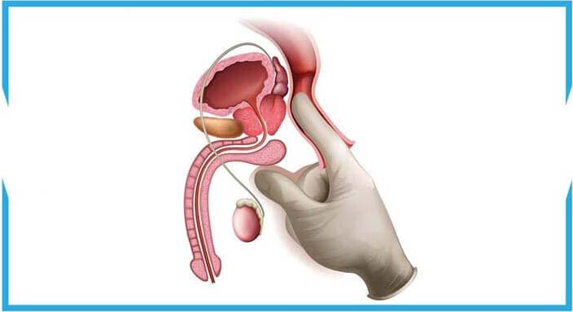

"ÚJABB BOTRÁNY TÖRT KI A GYÓGYSZERIPARBAN! MILYEN KÉSZÍTMÉNYEKET ADNAK EL NEKÜNK A
"SIKERES" GYÓGYSZERTÁRLÁNCOK A PROSZTATAGYULLADÁS ELLEN, VALAMINT HOGYAN HARCOLNAK A
PROSZTATAGYULLADÁSSAL SZEMBEN A KELET-EURÓPAI ORSZÁGOKBAN?"
Bevezető: Amint azt az orvosi gyakorlat is bizonyítja, ma szinte nincs olyan
35 évnél idősebb férfi, akinek minden rendben lenne a prosztatájával. Van, akinél
csak most kezdődik a gyulladás, másoknál már van gyulladásuk, amely elzárta a
húgycsöveket és ennek eredményeképpen sok problémát okozott a vizeléssel és a
potenciával. De a férfiak még ebben az esetben sem fordulnak szakemberhez. Miért?
Igen, ez azért van, mert mindenki tudja, hogy a prosztatagyulladás terápiája egy
nagyon kellemetlen és hosszadalmas folyamat. Egy csomó antibiotikumot kell szedni,
rektális masszázsra kell járni, a népi módszerek se a legkellemesebbek közé
tartoznak. És ha mindezen sikerül is túlesni, a gyulladás nagy valószínűséggel
visszatér.
HOGYAN LEHET MEGSZABADULNI A PROSZTATAGYULLADÁSTÓL? - A HÍRES EURÓPAI UROLÓGUS
SZAKEMBER VÁLASZOL.
Josip Ančić
A Kelet-Európa híres és tisztelt urológus
szakembere.
Az Európai Urológiai Akadémia tagja, a Washingtoni Urológiai és
Andrológiai
Akadémia tagja. Az Európai Lézeres Sebészeti Szövetség koordinátora
Kelet-Európában. Szakmai tapasztalat – 15 év.
Riporter: Josip, elmondaná, mi történik, ha semmit sem teszünk a
prosztatagyulladás és a gyakori vizelési inger ellen? Igaz, hogy a népi
módszerekkel történő terápia prosztatarák kialakulásához vezethet?
Josip Ančić: Igen, tényleg igaz. A prosztatagyulladás soha nem múlik
el magától – idővel a beteg állapota csak rosszabbodhat. Ha vizelési problémák
vannak, akkor a dolgok rossz úton haladnak, érintve a prosztatát is, így a rákos
sejtek bármikor megjelenhetnek. Általában csak 1-1,5 év telik el a vizelési
problémák kezdetétől az onkológia kezdetéig (prosztatagyulladás terápiájának
hiányában).
Először a szövődmények nem éreztetik magukat, de a rákos sejtek
felhalmozódhatnak, majd az esetek többségében tumor jelenik meg, ami halálos
kimenetelethez is vezethet. A későn diagnosztizált prosztatarák mindig szomorú
következményekhez vezet.
Mindeközben a korrupt szakemberek összejátszanak a magángyógyszertárakkal, hogy
elrejtsék a hatékony készítményeket. Egyre gyakrabban fordulnak szakemberhez
a 30, 25, de még a 20 éves férfiak is.
A betegség
előfordulásának növekedését az
szakemberek a következőkkel magyarázzák:
- mozgásszegény életmód;
- rendszertelen nemi élet;
- káros szokások;
- fertőző betegségek;
- örökletes hajlam;
- stressz, betegségek vagy felfázás.
A prosztatagyulladás diagnosztizálása nagyon egyszerű, komoly orvosi
ismereteket sem igényel:
Sok férfi él évekig prosztatagyulladással, annak ellenére, hogy emiatt jelentősen
romlik az életminőségük. Nincsenek tudatában a visszafordíthatatlan
következményekkel, amelyek jóval komolyabb jelleggel bírhatnak, mint csak
kellemetlen érzések.
Riporter: És hogyan birkózzanak meg a férfiak ezzel a betegséggel?
Josip Ančić: Hasonlítsuk össze a prosztata ellen alkalmazott
módszereket Kelet-Európában és a fejlettebb országokban.
Milyen a terápia a Kelet-Európa egyes országaiban (és milyen NEM KELL legyen)
A szokásos kúra azzal kezdődik, hogy az ember szakemberhez fordul. A vényre kapható készítmények
mellett a szakemberek mindig előírják a
prosztatamasszázst vagy egy hasonló hatású terápiát. Ez egy megalázó és
nagyon kellemetlen eljárás – a masszázst ujjal végzik a férfi végbélnyílásán
keresztül.

Átlagosan 10-14 alkalommal kell elvégezni. Természetesen minden alkalomért fizetni
kell. A fejlettebb országokban ezt a masszázst már 20 éve nem végzik, mivel a
modern készítmények lehetővé teszik a prosztata helyreállítását enélkül is!
Milyen a terápia az USA-ban és más országokban (és milyen KELL legyen)
A fejlett országokban a prosztatagyulladástól való megszabadulás érdekében még
szakemberhez sem kell fordulni. A probléma első jelei megjelenésekor elegendő
megvenni az egy évtizede használt készítményt, aminek a neve . Természetesen egy ilyen termék nem nyereséges a
gyógyszertár maffiánknak – elvégre sokkal jövedelmezőbb a betegség jeleinek
ideiglenes megszüntetése, mint hogy segítsenek megszabadulni a betegségtől
egy kúra alatt egy olcsó és mindenki számára megfizethető készítménnyel.
Riporter: Jobb lesz-e a helyzet az országunkban? A mi férfilakosságunk
számára is elérhető lesz a termék?
Josip Ančić: Jelenleg az nem kapható a mi
gyógyszertárainkban. És nem azért, mert nem elég hatékony, épp ellenkezőleg, túl jó!
Hasonlítsuk össze az a többi termékkel.
Más készítmények
Hatás:
Hatás:
Segít megszüntetni a prosztatagyulladást, beleértve a krónikust is. Csupán 1 kúrával
Hatás:
Megszünteti a prosztatagyulladás jeleit, a fájdalmat és a vizelési zavarokat
További hatások:
További hatások:
Képes fokozni a libidót
Segít normalizálni a húgyhólyag működését
Növelheti a potenciát
Serkenti az erek állapotának javítását
További
hatások:
Lágyítja a székletet. Fokozza a bél motivitását
A szervezetre káros
mellékhatások:
A
szervezetre káros mellékhatások:
Általában nincs. Természetes alapú összetevőkből áll
A
szervezetre káros mellékhatások:
Csökkenti a potenciát
Rosszindulatú elváltozásokat okozhat a prosztatában
Elnyomja az immunrendszert
Bélproblémákat okoz
Hozzájárul az allergia kialakulásához
Gyomorfájdalmakat okozhat
Működési elv:
Működési
elv:
A természetes összetevők speciálisan kiválasztott
összetételével átfogóan érinti a prosztatát, gyulladásgátló
és erősítő hatást biztosít. Segít eltávolítani a patogén
flórát a prosztatából, javítva a prosztata szerkezetét és
működését. Ajánlott krónikus, pangásos és bakteriális
prostatitis esetén
Működési
elv:
Ideiglenesen enyhíti a fájdalmat a prosztatában,
elfedi a betegség lefolyását. Azonban a készítmény szedését
követően kiújul a betegség
Összetétel:
Összetétel:
Természetes növényi összetevők: csalán, tőzegáfonya, kamilla és fenyőfa
kivonat
Összetétel:
Olyan
kémiai összetevőket
tartalmaz, amelyek mellékhatásokat okoznak
A magángyógyszertárak és szakemberek munkájának bármilyen pozitív
változása sajnos nem várható, a gyógyszeripar egy többmilliárdos üzletág, és az
abból származó bevételt a legnagyobb halak kapják.
Azonban ma már van a kiút. Az "Itt van a segítség" nevű jótékonysági alapítvány
tisztában van a készítmény elérhetőségének problémájával, és gondoskodott férfiakról
- finanszírozásról megállapodást írtak alá a gyártóval, amely lehetővé tette az
kedvezményes eladását a
gyártó hivatalos weboldalán. A rendeléshez csak menjen
fel a weboldalra és hagyjon kérelmet. A szállítás az ország bármely pontjára postai
úton történik, átvételkor történő fizetéssel.
Riporter: Kiváló, köszönöm az információt, Josip! Szeretne mondani valamit
az olvasóinknak, mielőtt befejezzük az interjút?
Lukács Zsigmond: Az egyetlen dolog, amit szeretnék mondani – ne
legyenek közömbösek a saját életük iránt. A prosztatagyulladás egy rendkívül
veszélyes betegség, amely megfelelő terápia hiányában az esetek 75%-ában
prosztatarákká alakulhat. Ha önnek jelei vannak, vagy már diagnosztizálták –
álljon szemben a betegséggel, amikor az még megállítható és visszanyerheti
egészségét!
Vezércikk: Az kedvezményes vásárlásának lehetősége, amelyről Josip
Ančić is beszélt, -ig tart. Az
megrendelése kedvezményesen
lehetséges a
gyártó hivatalos oldalán.
434
hozzászólás
Bertalan Kovács
Köszönöm az érdekes cikket! Nálunk a
legmagasabb szinten minden korrupt, jó, hogy az Internet még elérhető.
Megrendeltem az . Gondoskodni fogok magamról.
11 perccel ezelőtt
Halász Dávid
Teljesen egyetértek! Vettem Kínában,
amikor üzleti útra mentem. Azelőtt 10 évig szenvedtem a krónikus
prosztatagyulladástól. Különböző módszereket kipróbáltam, de ahogy
fentebb leírták, a terápia csak átmeneti hatást adott. Az
használatával a prostatitis teljesen elmúlt. Több, mint hat hónapja
nincs panaszom. Korábban ez csak álom volt. Minden férfinek ajánlom.
Segíteni fog!
27 perccel ezelőtt
Szabó Ádám
Kösz a tanácsot. Nagyon érdekes. Sokat
hallottam erről az ról. Most kipróbálom!
36 perccel ezelőtt
Szekeres Árpád
Nekem is van tapasztalatom a prosztatagyulladás
terápiájában ezzel a termékkel. Megrendeltem a megadott oldalon, csak akkor nem volt
semmiféle akció, és háromszor ennyibe került. De nem sajnálom a pénzt,
mert a gyulladás gyorsan elmúlt, mindenféle masszázsok nélkül.
49 perccel ezelőtt
Pásztor Benjámin
Jó napot! Még 3 hónapja megrendeltem az , és
szeretném megosztani veletek a
tapasztalataimat. Szinte azonnal jobban éreztem magam. A vizelés kezdett
visszatérni a normális kerékvágásba. Egy hét után az éjszakai kijárások
egyre ritkábban jelentkeztek. Azt hiszem, lassan szépen helyreáll
minden. És általában más jelek a kúra végéig folyamatosan csökkentek.
Féltem, hogy a kúra végén minden újrakezdődik. De nem történt meg!
Egy hónappal az alkalmazás után csináltam egy második ultrahangot, ami
azt mutatta, hogy teljesen egészséges vagyok. Szóval ezzel a betegséggel
is meg lehet küzdeni anélkül, hogy elhagynád a házat.
55 perccel ezelőtt
Papné Kinga
Kell egy ilyet rendelnem a férjemnek. Köszönöm!
1 órával ezelőtt
Péter Tibor
Egyszer néztem egy műsort a kelet-európai
gyógyszeriparról. Valami oknyomozó újságíró riport volt. Ott is az
ról beszéltek. Addig kell megvenni, amíg van rá lehetőség. Azt
mondták, lehet, hogy hamarosan el is fogy.
1 órával ezelőtt
Barta László
Megvettem. Még sosem találkoztam ilyen
akcióval. Köszönet a gyártónak!
1 órával ezelőtt
Nagy Ede
Krónikus prosztatagyulladásom van 28 éves korom
óta. Már 41 vagyok. Ez idő alatt többször elvégeztem a kúrát, de a kúrák
után a betegség mindig kiújult. Legutóbb alig tudtak megmenteni. Azt
mondták, még egy kicsi, és prosztatarák lett volna a vége. Ezért azt
tanácsolom mindenkinek, aki prostatitistől szenved, szabaduljon meg tőle
a lehető leghamarabb. Ez egy nagyon veszélyes betegség.
1 órával ezelőtt
Gulyásné Natália
Nagyszerű készítmény, a férjem is használja. A
prosztatamasszázs egyébként egy elég hatékony dolog, de hát senkinek nem
tetszik. Az nagyon segített a ferjemnek, aki megszabadult a
prosztatagyulladástól. Ráadásul nem is drága.
1 órával ezelőtt
Orbán Géza
Szerintem az a legjobb
készítmény! Egyetértek a szakemberrel, és az összes hozzászólóval, aki
dicsérte. 3 hónapja használtam. A prostatitis teljesen elmúlt! Ezelőtt
évekig szenvedtem miatta, merevedési zavaraim voltak. Most minden
visszatért a normális kerékvágásba.
1 órával ezelőtt
Bakos Péter
Többet olvastam az ról a weboldalon.
Lenyűgöző! Megrendeltem. Megígérték, hogy 2 nap múlva átvehetem a
postán. Kényelmes.
1 órával ezelőtt
Patakiné Renáta
A férjem imádja az extrém sportokat: túrázás,
hegymászás, rafting, airsoft. És ennek megfelelően, vannak különböző
kritikus helyzetek, amikről már otthon, a humoros elbeszélesékből tudok
meg. De volt egy eset, ami nem végződött olyan vidáman. Hipotermiás
lett, és majdnem azonnal prosztatagyulladás alakult ki nála. A szakember
írt fel.
Segített gyorsan megszabadulni a prostatitistől és
visszaadta a férjem normális szexuális funkcióit. Bár kétségei voltak,
hogy ez segíteni fog. Mivel sok ismerősénél negyvenen túl kezdtek
megjelenni a potencia gondok, azt hitte, egyszerűen abba a korba lépett,
amikor ez már természetes. De a kúra után megszabadult az ilyen
gondolatoktól, és remélem, hosszú időre.
Most is aktívan sportol. A
kedvenc hobbijai közé hozzáadta az ejtőernyőzést is. De emellett kétszer
jobban odafigyel az egészségére. Az már az elsősegély dobozában
tartja. Ahogy ő mondja, lehetnek mindenféle helyzetek, és jobb azonnal
megelőzni a bajt, és nem várni, amíg a betegség elhatalmasodik.
2 órával ezelőtt
Deák Marcell
Kitűnő termék.
2 órával ezelőtt
Kovács Vilmos
Egy tanács nagyon megmaradt bennem: jobb ma egy
készítmény, mint holnap egy műtét.
2 órával ezelőtt
Dudás Géza
Srácok, ez tényleg nem semmi! 4 hete vettem.
Mostanra egyetlen panaszom se maradt. Eltűntek a fájdalmak, már nem kell
állandóan a mosdóba rohangálnom, nem fáj, ha vizelek. Plusz jelentősen
javult a potenciám és a szex is hosszabb. Nagyszerűen érzem magam.
Kedvezményesen határozottan érdemes megvásárolni. Több tízezret is
kiadnék érte. A termék hatékonysága kellemesen meglepett, a többi
készítmény a közelében sincs.
3 órával ezelőtt
Papné Boglárka
Az én férjem visszautasította a
prosztatamasszázst, gondolom, a férfiaknak van valami előítélete ezzel
az eljárással kapcsolatban. Na de mindegy. Ő is használta az ,
együtt tanulmányoztuk az összetételét. A férjem most elégedett, azt
mondja, mintha soha nem is lett volna beteg.
3 órával ezelőtt
Balogh Bálint
Megrendeltem, minden egyszerű, meghagyod a
számod, visszahívnak, mindent elmagyaráznak. 2 napon belül megkaptam az
, minden névtelenül. Elkezdtem használni. Később beszámolok az
eredményről. Köszönöm!
4 órával ezelőtt
Horváth Donát
Olvastam a véleményeket, és rájöttem, ki kell
próbálni! Megyek, megrendelem. Mi több, nem csak megveszed, előtte
konzultál veled egy specialista.
4 órával ezelőtt
Borbély Rezső
A prosztatagyulladás hirtelen tört rám, egyszer
csak pokoli fájdalmat éreztem, égetett vizeléskor, se ülni, se állni nem
tudtam. Annyira megijedtem, hogy rohantam a szakemberhez. Kiderült,
prosztatagyulladás, csak már krónikus. Felírtak rengeteg készítményt, de
megnéztem az összetételüket, a mellékhatásait és a vásárlói véleményeket
és egyszerűen nem mertem megvenni.
Pokoli 2 nap után úgy
döntöttem, megveszem az , noha kezdetben nem fűztem hozzá nagy
reményeket. Röviden, egy nappal később végre ki tudtam aludni magam és a
wc-re is el tudtam menni normálisan. A prosztatagyulladás most már csak
egy szörnyű emlék.
5 órával ezelőtt
Szőke Ernő
Ez a termék a legjobb, mindenkinek ajánlom! Jó
készítmény, köszönöm.